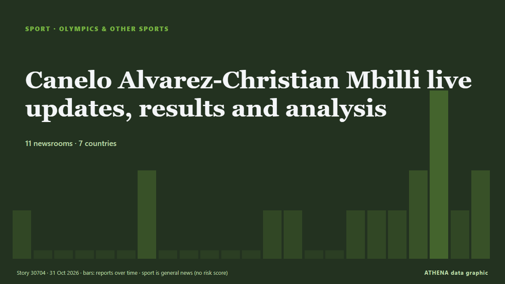

Олимпиада и другие виды
| 18 окт. | 1 |
|---|---|
| 19 окт. | 0 |
| 20 окт. | 0 |
| 21 окт. | 2 |
| 22 окт. | 1 |
| 23 окт. | 0 |
| 24 окт. | 2 |
| 25 окт. | 2 |
| 26 окт. | 1 |
| 27 окт. | 1 |
| 28 окт. | 5 |
| 29 окт. | 4 |
| 30 окт. | 4 |
| 31 окт. | 1 |
Заголовки приводятся на английском языке, как они были опубликованы.

Canelo Alvarez-Christian Mbilli live updates, results and analysis
Canelo Alvarez challenges Christian Mbilli for the WBC super middleweight title. из ESPN
Pakistan beat India in 23 balls after Krunal Pandya's disappointing show in Hong Kong Sixes
Dubai: Pakistan beat India by four wickets in the Hong Kong Sixes on Friday, chasing down a target of 89 in just 3.5 overs in their Group C clash at Mission Road Ground. из Gulf News
Hyrox athlete Joanna Wietrzyk who soiled herself in race says backlash was ‘traumatic’ ahead of comeback
Dubai: HYROX world champion Joanna Wietrzyk will return to competition in Hamburg, Germany, on Friday, October 30, after a human-waste contamination incident during a race in Beijing sparked… из Gulf News
Recap: Rugby League World Cup: Australia v Fiji
All the action as Australia's Kangaroos face the Fiji Bati at the Rugby League World Cup - kickoff 9.05pm Fiji time (10.05pm NZT). из RNZ Pacific
Chase sparks Bangladesh collapse as West Indies on top in Mirpur Test
West Indies' Royston Chase forces collapse as Bangladesh slump to 79-6, a lead of 106 runs, on day three of first Test. из Al Jazeera English
Lancashire exit came as shock, says Anderson
Dubai: England cricket legend James Anderson is expected to bring his playing career to an end after Lancashire decided against offering him a new contract for the 2027 season. из Gulf News
South Africa unveils Durban as bid city for 2036 or 2040 Olympics
South Africa named the coastal city of Durban as its preferred candidate to host either the 2036 or 2040 Olympic Games. из Free Malaysia Today
Rashid Khan becomes first bowler to take 200 T20I wickets
Rashid also has two five-wicket hauls in T20 internationals, with career-best figures of 5-3. из Amu TV
Kiss backs 'hungry' Beale to push for Wallabies game time
SYDNEY: Wallabies head coach Les Kiss backed Kurtley Beale on Friday to push for a place in the Australian team during the Nations Championship after the veteran star’s shock recall. из New Straits Times
Iran wins Greco-Roman wrestling World Championship title
Tehran, IRNA – Iran’s national Greco-Roman wrestling team won the early overall title at the World Championships in Kazakhstan, with three gold, two silver and two bronze medals. из IRNA (English)
Charles tickled by boxing club’s T-shirt depicting him as king of the ring
The King was immortalised on black T-shirts, complete with crown, gloves, shorts, and a boxing belt, worn by young fighters and their head coach. из The Irish News (Belfast)
Tyson Fury says he ‘didn’t want to live’ in tearful new documentary trailer
The upcoming self-titled Netflix documentary traces the boxer’s life from his childhood to the height of his career. из Evening Standard (London)
Jake Paul announces Dubai boxing comeback on Christmas Eve after Anthony Joshua defeat
Jake Paul will return to boxing in Dubai on December 24, 2026, one year after his Anthony Joshua fight. из Arabian Business
Former Lucasfilm head Kathleen Kennedy to produce 2028 Olympics ceremonies
Hollywood producer Kennedy to head LA28 Olympic ceremony plans Estelle.Bronkhorst Thu, 10/29/2026 - 12:00 LOS ANGELES - Oscar-nominated film producer Kathleen Kennedy was named on Wednesday to… из eNCA
From Abu Dhabi to London: Aldar’s growing British property footprint
The developer is behind homes across London, from the iconic Westminster Tower to the transformation of a historic county hall in Kingston upon Thames. из Arabian Business
Moscow to host 2030 World Weightlifting Championships
That was announced by the press service of the International Weightlifting Federation. из TASS (English)
Perfect pairing? Why India must stick with Abhishek Sharma and Vaibhav Sooryavanshi
While Abhishek’s century was the headline act, Sooryavanshi’s fearless approach set the tone. из Times of India
Jana al Sharji claims historic silver at San Jose Fencing World Cup
MUSCAT: Oman’s Jana al Sharji claimed a historic silver medal in the Cadet Women’s Individual Épée event at the San Jose Fencing World Cup 2026 in Costa Rica, marking a landmark ac... из Oman Observer